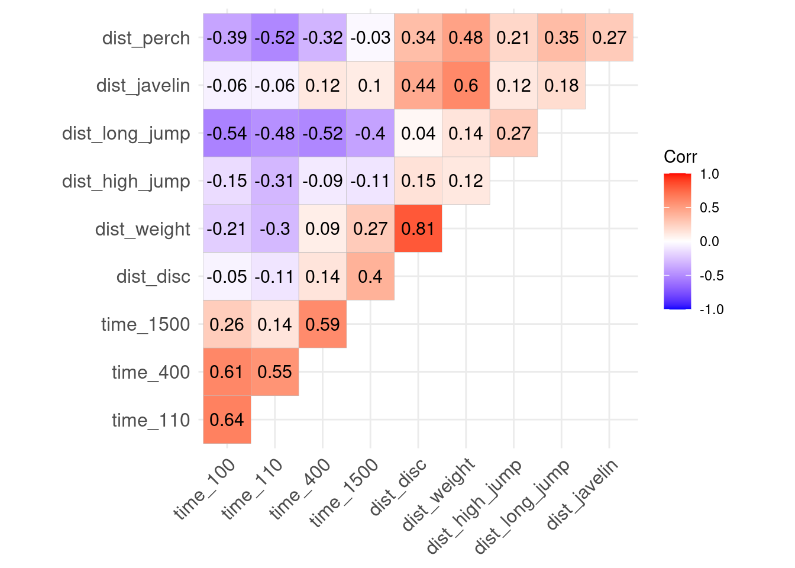
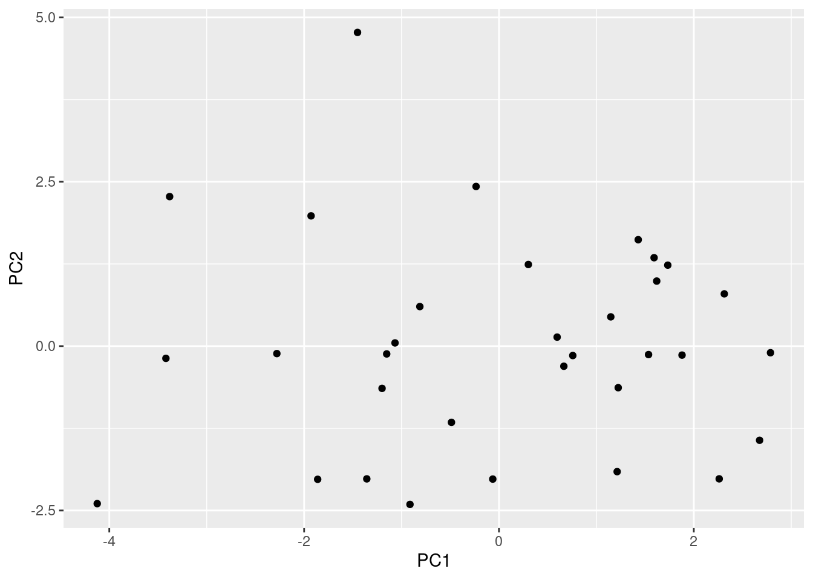
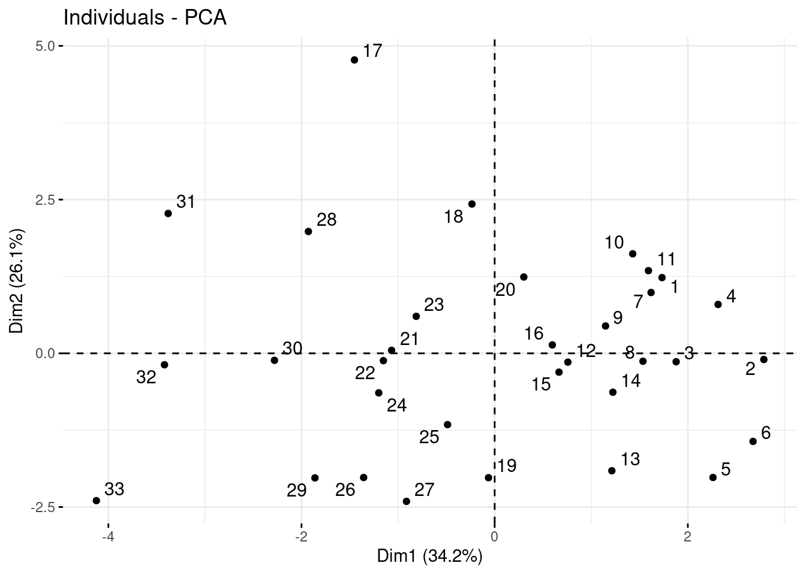
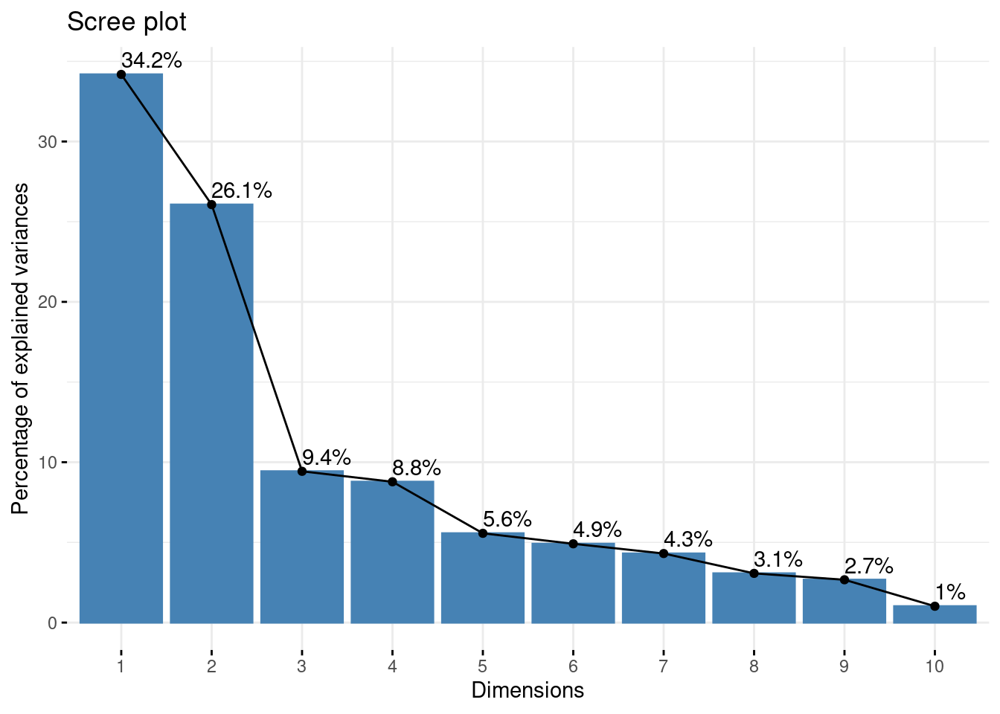
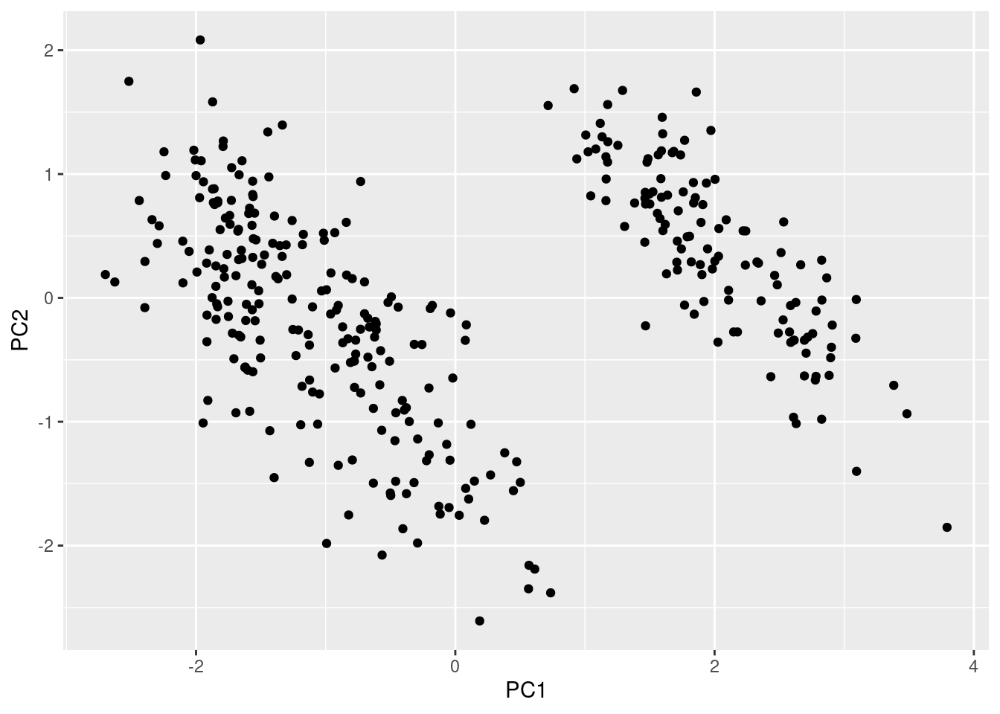

Dimension Reduction
Learning objectives
- Understand the concept of Principal Component Analysis (PCA).
- Perform PCA, interpret PCA outputs, visualize principal components.
- Compare observations using the reduced dimensions.
We will use a new package, factoextra, to provide information about the algorithm for dimension reduction using ggplot functions.
Then load all packages for today:
We will consider the built-in database olympic again which gives the performances of 33 men in the decathlon (10 disciplines) at the Olympic Games in 1988:
# Save the database into your environment, then the dataset
data("olympic")
athletes <- olympic$tab
# Quick cleanup
athletes <- athletes |>
# Translate the variable names (from French!) and reorder
select(time_100 = `100`, time_110 = `110`,
time_400 = `400`, time_1500 = `1500`,
dist_disc = disq, dist_weight = poid,
dist_high_jump = haut, dist_long_jump = long,
dist_javelin = jave, dist_perch = perc)
head(athletes)Previously, we talked about the correlation matrix, representing the correlation between each pair of variables:
# Correlation matrix
ggcorrplot(cor(athletes),
type = "upper", # upper diagonal only
lab = TRUE) # print values
Now, we would like to combine some of these variables together to visualize our data in 2 dimensions.
1. Principal Component Analysis
The 4 steps in PCA are:
Prepare the data: Scale the data (subtract mean, divide by standard deviation).
Perform PCA: Using
prcomp()on your prepared variables.Choose the number of principal components: Make a scree plot (or choose based on interpretability).
Consider PC scores (the new coordinates for each observation on PCs of interest) and visualize and interpret (if possible) retained PCs and scores.
a. Prepare the dataset and explore correlations
We aim to group variables that convey similar information. It is a good practice to scale our variables so they are all in the same unit (how many standard deviations away a value is from the mean) with scale()
# Prepare the dataset
athletes_scaled <- athletes |>
# Scale the variables
scale() |>
# Save as a data frame
as.data.frame()
# Take a look at the scaled data
head(athletes_scaled)Recall: What does a negative value indicate in the scaled data?
A negative value indicates that a given athlete is below average compared to the other athletes.
b. Perform PCA
Let’s perform PCA on our 10 variables using prcomp().
# PCA performed with the function prcomp()
pca <- athletes_scaled |>
prcomp()
# The output creates 5 different objects
names(pca)## [1] "sdev" "rotation" "center" "scale" "x"Without going into too much detail, let’s describe the element x. Instead of having the performances of the 33 athletes for each 10 disciplines, we have new values according to the new variables PC1, PC2, …, PC10. The first few principal components (PC), also called dimensions, try to maximize the variation explained by all variables.
Try it! The procedure for PCA also assumes that the components/dimensions are not correlated. Make the correlation matrix to check the correlation between the components/dimensions. What do you notice?
# Correlation matrix
ggcorrplot(cor(new_athletes),
type = "upper", # upper diagonal only
lab = TRUE) # print values
None of the components/dimensions are correlated!
Let’s use the new dimensions (PC1 and PC2, also called Dim1 and Dim2 respectively) to represent the athletes.
Try it! Using the new_athletes represent the athletes on the first two principal components.
# Visualize the individuals according to PC1 and PC2
new_athletes |>
ggplot() +
geom_point(aes(x = PC1, y = PC2))
Or, more convenient, using the functions from the factoextra package:
# Visualize the individuals according to PC1 and PC2
fviz_pca_ind(pca, repel = TRUE) # Avoid text overlapping for the row number
Note that the numbers shown on the scatterplot represent the rank of each athlete.
The scatterplot above is a new perspective on our data: it shows how the 33 athletes compare to each other, taking into account the 10 disciplines which are summarized with Dim1 and Dim2, the first two principal components. Since we reduced the amount of variables, we lost some information about how the 33 athletes vary from each other: Dim1 takes into account 34.2% of the total variation and Dim2 takes into account another 26.1% of the total variation.
c. Choose the number of principal components
The idea is to reduce the number of variables so we would like to keep only a few of the principal components (also called dimensions). A scree plot displays the amount of variance explained by each principal component. The more we explain the total variation, the better!
# Visualize percentage of variance explained for each PC in a scree plot
fviz_eig(pca, addlabels = TRUE)
We are usually looking to keep about 80% of the variance in the data with the few first principal components/dimensions.
Try it! Reading the plot above, how many dimensions should we consider to keep about 80% of the variance?
## [1] 78.5Keeping the first 4 dimensions will add up to about 78.5% so we would need 5 dimensions to keep at least 80% of the variation. Note: it’s difficult to represent data with 5 “variables”!
d. Interpret components/dimensions
Each component/dimension is actually a linear combination of the old variables (each of the 10 disciplines). We can take a look at the contribution of each variable to each component/dimension:
# Visualize the contributions of the variables to the PCs in a table
get_pca_var(pca)$coord |> as.data.frame()For example, the first principal component (Dim.1) is:
\[ Dim.1 = -0.7689031 * time\_100 + ... -0.3145678*time\_1500 + ... + 0.7101094*dist\_perch \]
Try it! Use dplyr functions to find the variable that contributes the most positively to the first principal component and the variable that contributes the most negatively as well.
# From the new coordinates
get_pca_var(pca)$coord |> as.data.frame() |>
filter(Dim.1 == max(Dim.1) | Dim.1 == min(Dim.1)) |>
select(Dim.1)The variable dist_long_jump contributes the most positively to the first principal component while the variable time_110 contributes the most negatively to the first principal component.
We can visualize the contributions of the variables with what we call a correlation circle:
# Correlation circle
fviz_pca_var(pca, col.var = "black",
repel = TRUE) # Avoid text overlapping of the variable names
Based on this visualization, we can see that some disciplines contribute positively to the first component and some contribute negatively to that same dimension. What do you notice when comparing the nature of those disciplines opposing each other on the first dimension?
The variables of running are opposite of the other variables.
Finally, we can visualize both the individuals and the variables’ contributions in a single plot called a biplot:
# Visualize both variables and individuals in the same graph
fviz_pca_biplot(pca,
repel = TRUE) # Avoid text overlapping of the names
The labels for the athletes show their overall decathlon rank. What do you notice about where the best ranked athletes are located? the worst ranked athletes?
Most of the best athletes are on the right of the graph while the others are on the left.
What does it mean for an athlete to have a high value for the first dimension?
A high value on the first dimension means an athlete performs well in events where higher scores are better (e.g., long jump, pole vault, etc., above average) and also performs well in events where lower scores are better (i.e., faster times, below average).
2. Some considerations for using PCA
While PCA is a powerful tool for reducing the number of variables and uncovering patterns in the data, it has a few important limitations:
PCA only works with numeric variables: Since PCA is based on the correlation matrix, it cannot be applied directly to categorical variables without some form of encoding.
PCA ignores missing values: Any rows with missing values must be removed beforehand, which could influence the analysis.
Interpretation can be difficult: The principal components are combinations of the original variables, which can sometimes make interpretation not so intuitive.
Linear assumptions: PCA captures linear relationships between variables, so it might not be ideal if the data has strong nonlinear patterns.
Remember the dataset about a community of penguins in the Antarctic?
# Save the object as a dataframe
penguins <- as.data.frame(palmerpenguins::penguins)
# Take a quick look
head(penguins)Try it! Apply PCA to this dataset by 1) only keeping the variables about size measurements, 2) ignoring missing values, 3) scaling the data. Then represent the penguins on the first two principal components. What do you notice?
# Prepare the dataset
penguins_scaled <- penguins |>
# Only keep the measurements
select(bill_length_mm, bill_depth_mm, flipper_length_mm, body_mass_g) |>
# Ignore missing values
drop_na() |>
# Scale the variables
scale() |>
# Save as a data frame
as.data.frame()
# Perform PCA
pca <- penguins_scaled |> prcomp()
# Represent the penguins comparing all 4 measurements
pca$x |> as.data.frame() |>
ggplot() +
geom_point(aes(x = PC1, y = PC2))
Looks like there are two main groups of penguins… why?
Recommended Resources
- Worksheet keys are posted at the end of the week on Canvas under Programming Tools.
- Recommended readings Dimension reduction
- Learn more about factoextra